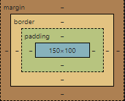
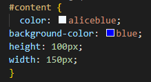
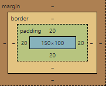
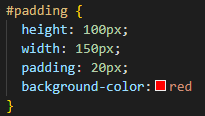
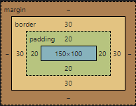
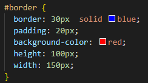
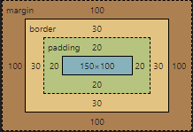
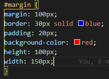

The box model is a tool to understand CSS spacing of elements and almost like a cheat sheet picture of how to understand how it works when you can read it. The box model is bad up of 4 basic parts. The first being the "content", This can be a text or image that makes the centre of the picture. The next is the padding which is the space between the content and the border and can sometimes act as a backdrop to the content. The Border is the next part of the box model. It is the gap between the margin and the padding. It can act almost like another backdrop to the entire thing and gives the overall sizing of the box. The Margin is the final piece and it controls the overall spacing between the border and the elements around it. There are some examples below with more indepth examples as well as the DOM model of box model and the code for the model in CSS.
Content is the centre of the box model and the most important part of the element.In the image below is a basic example of content (This being the text).
Below is a DOM box model of the Content in this example (the blue centre). The DOM images in this article will just show a visual to help better understand the box model and how each portion fits in with it.
Below is the CSS for this content portion for this box model.
Now we will add 20px of padding on each side of the content to make it larger without adding more content. Padding is directly outside of the content and can be useful to make an image take up more space without stretching it for example.
Below is the DOM image of this padding. It is just simply 20px in addition on each side making it 140px tall and 190px wide.
Below is the CSS code for this padding.
The border is the space between the Margin or the outside of the element and the padding. Its also the last portion of the box model that adds any visible size to the box on the page.
Below is the DOM image of this Border box model as you can see it adds a 30 pixel sized border around the entire box.
Below is the CSS code for this border.
The Margin is the space between the border and any other element on the page as you can see below as it is set to be 100px away from any other element on the page. This includes the sides of the page and the paragraph above it.This stage is important to make sure the content is spaced correctly on the page.
Below is an image of this Margin box model and as you can see it adds 100px space between any other element on the page and its the protective bubble on the outside.
Below is the CSS code for this Margin
As you can see the box model concept is really important yet basic concept that is important to learn as it teaches all about sizing and layout of elements on the page and making them work smoothly will allow for a clean and function page with inline elements and well placed and spaced elements for example images or buttons.